HISTÓRIA DO CORINTHIANS
A FUNDAÇÃO
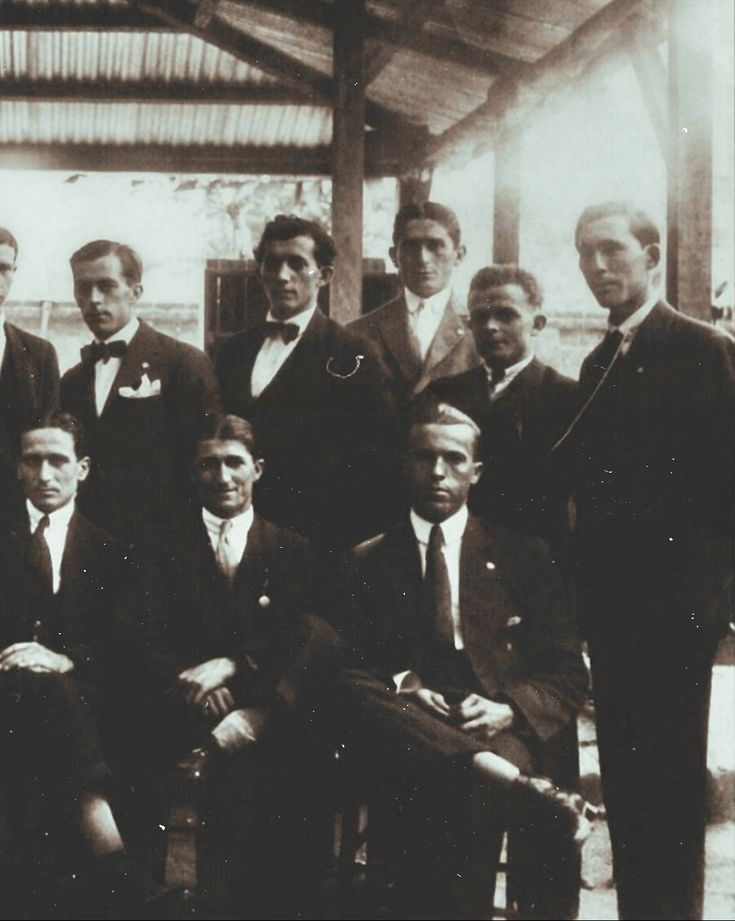
O Sport Club Corinthians Paulista foi fundado em 1910, dando início a uma das histórias mais marcantes do futebol brasileiro.
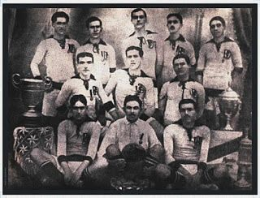
O PRIMEIRO TÍTULO PAULISTA
Em 1914, o Corinthians conquistou seu primeiro Campeonato Paulista, dando início à trajetória de grandes conquistas do clube no futebol estadual.
CAMPEÃO DOS CAMPEÕES
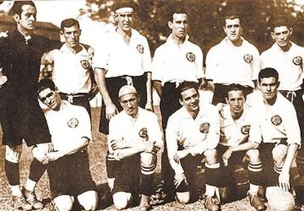
O Corinthians conquistou a Taça APEA, competição que ficou marcada como um dos primeiros grandes títulos interestaduais do clube, reforçando sua tradição como "Campeão dos Campeões".
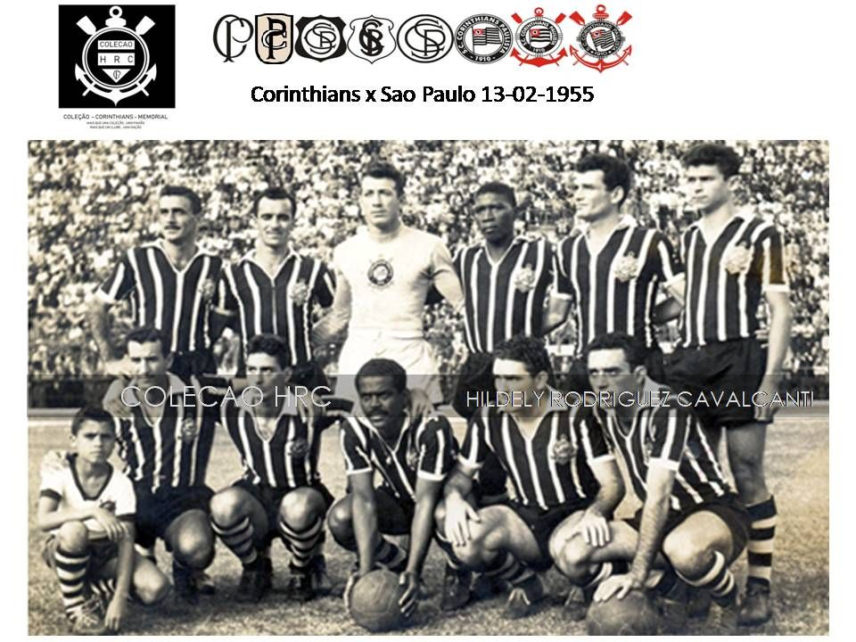
O IV CENTENÁRIO
Em 1954, o Corinthians conquistou o Campeonato Paulista no ano em que São Paulo comemorava seu IV Centenário. O título se tornou um dos capítulos mais marcantes da história do clube.
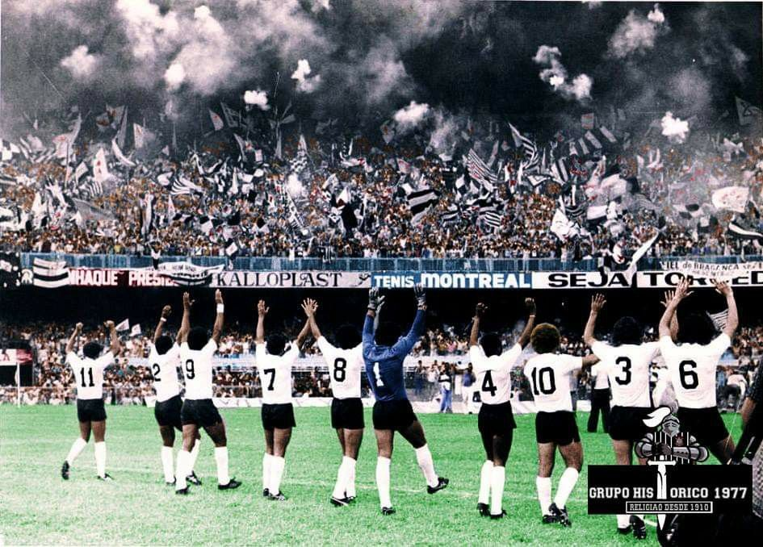
A INVASÃO CORINTHIANA
Em 1976, milhares de torcedores do Corinthians viajaram até o Rio de Janeiro para acompanhar a semifinal do Campeonato Brasileiro contra o Fluminense, no Maracanã. A presença da Fiel naquele jogo entrou para a história como a famosa Invasão Corinthiana.
O FIM DO JEJUM
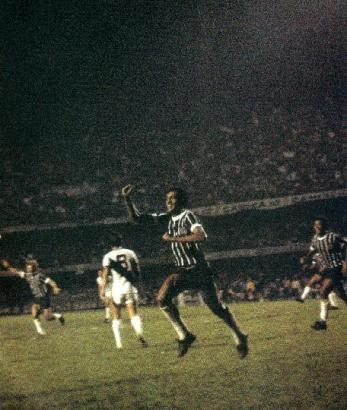
Em 1977, o Corinthians conquistou o Campeonato Paulista, encerrando um longo período sem títulos importantes.
DEMOCRACIA CORINTHIANA
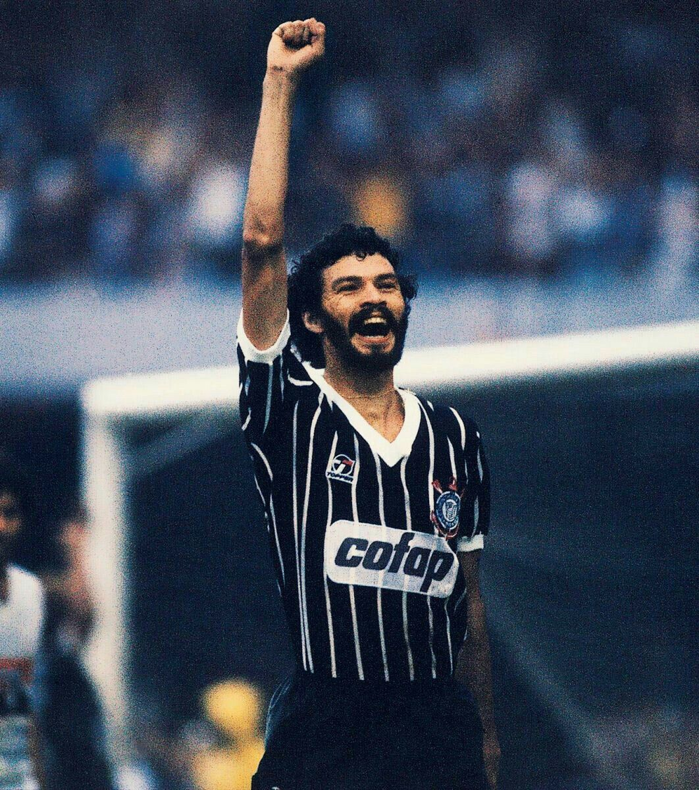
No início dos anos 1980, o Corinthians viveu um dos períodos mais marcantes de sua história. Jogadores como Sócrates, Wladimir e Casagrande participaram de um movimento em que jogadores e funcionários passaram a ter maior participação nas decisões do clube.
PRIMEIRO CAMPEONATO BRASILEIRO
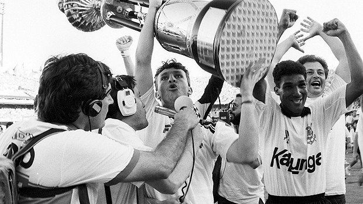
O Corinthians conquistou seu primeiro Campeonato Brasileiro.
CAMPEÃO DO MUNDO
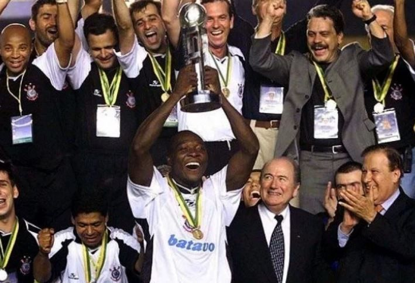
O Corinthians conquistou o primeiro Mundial de Clubes da FIFA, em uma campanha histórica.
CAMPEÃO BRASILEIRO

O Corinthians conquistou seu quarto Campeonato Brasileiro, encerrando uma campanha marcante na história do clube.

O PRIMEIRO REBAIXAMENTO
Em 2 de dezembro de 2007, o Corinthians empatou em 1 a 1 com o Grêmio e terminou o Campeonato Brasileiro na 17ª colocação, sendo rebaixado para a Série B pela primeira vez em sua história.
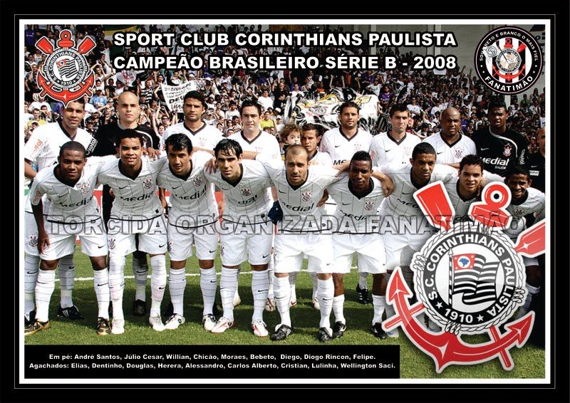
A RECONSTRUÇÃO
Em 2008, o Corinthians disputou a Série B e conquistou o título da competição, garantindo seu retorno à elite do futebol brasileiro.
CAMPEÃO DA COPA DO BRASIL
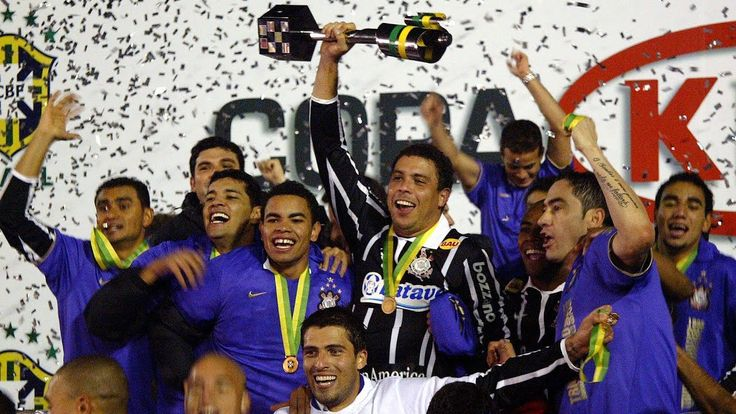
O Corinthians conquistou a Copa do Brasil, garantindo mais um título importante para sua história.
LIBERTADORES INVICTO
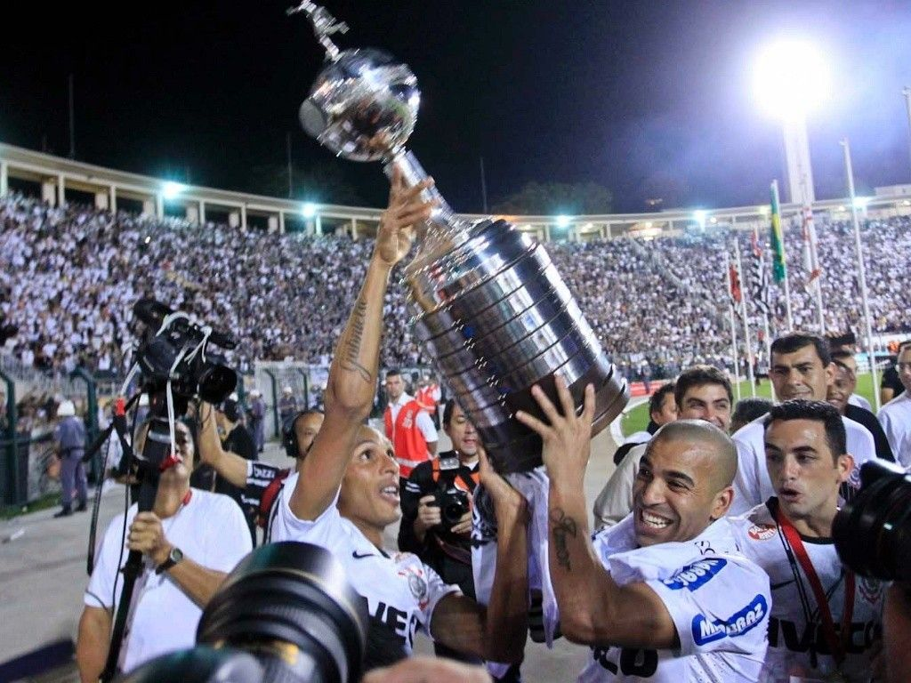
O Corinthians conquistou sua primeira Copa Libertadores de forma invicta, entrando para a história do clube.
BI CAMPEÃO MUNDIAL
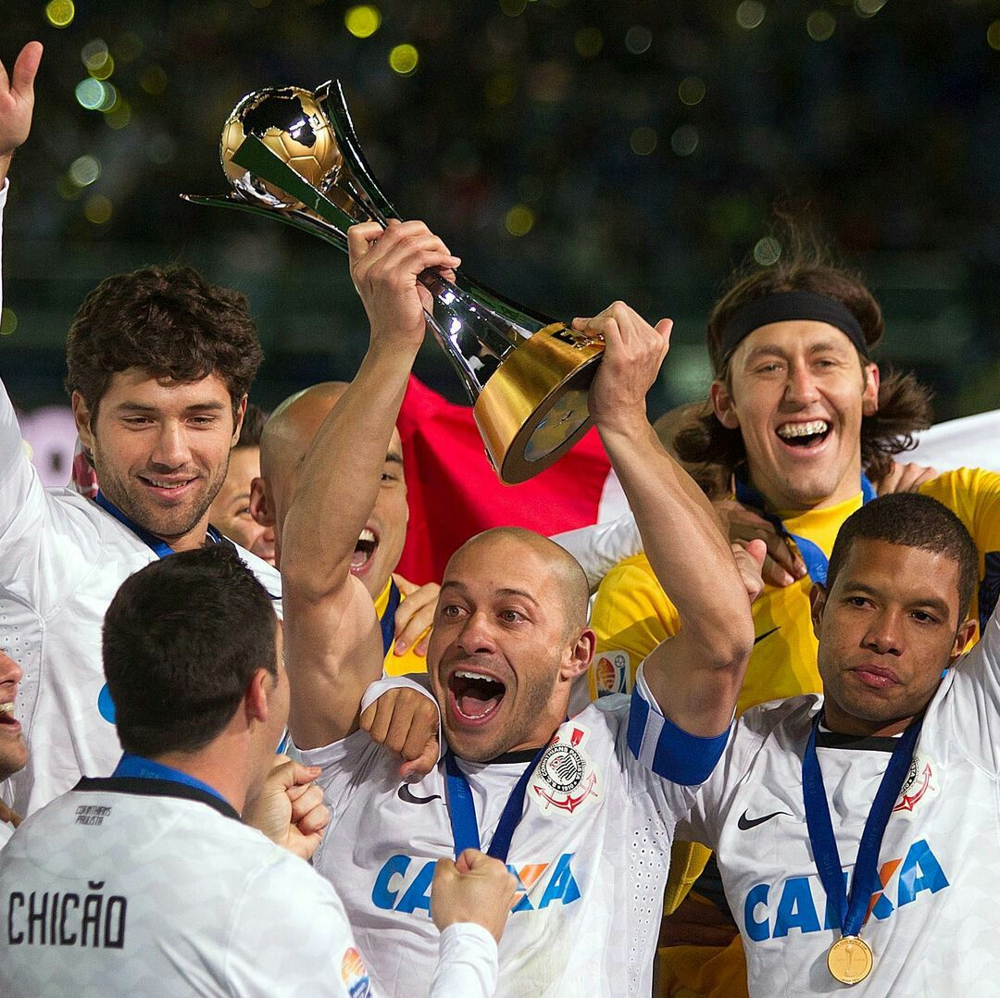
No mesmo ano, o Corinthians conquistou o Mundial de Clubes da FIFA, encerrando uma temporada histórica.
CAMPEÃO PAULISTA E RECOPA
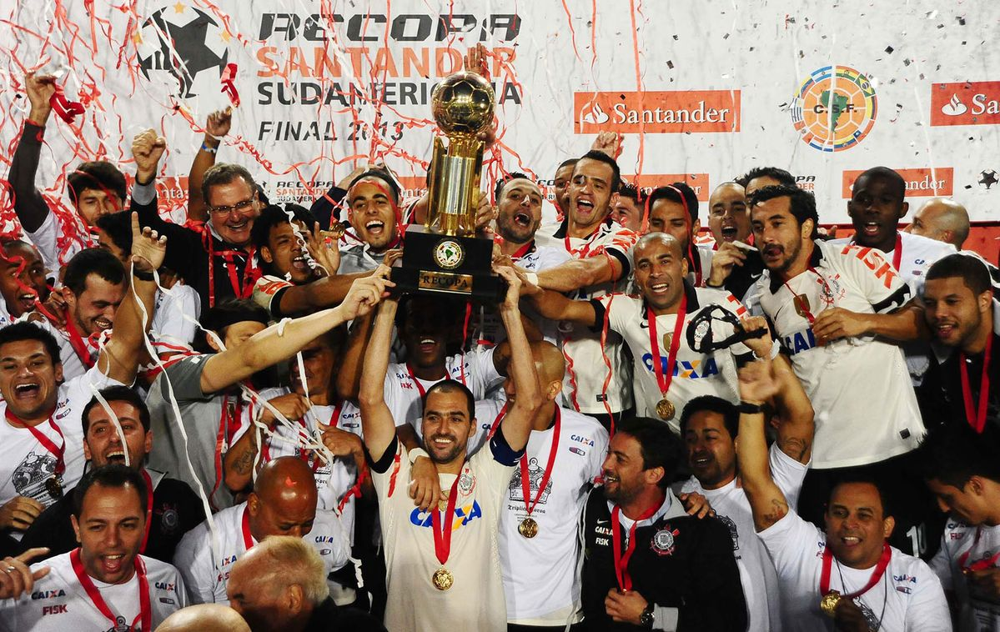
O Corinthians conquistou o Campeonato Paulista e a Recopa Sul-Americana, ampliando sua coleção de títulos internacionais.
HEXACAMPEÃO BRASILEIRO
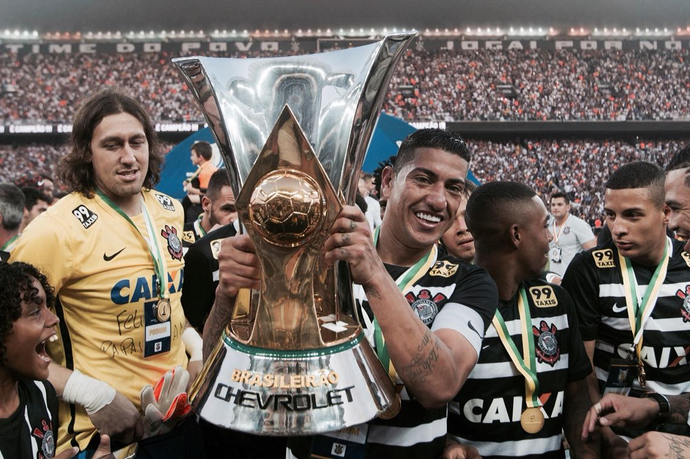
O Corinthians conquistou seu sexto Campeonato Brasileiro em uma campanha de grande destaque.
HEPTACAMPEÃO BRASILEIRO
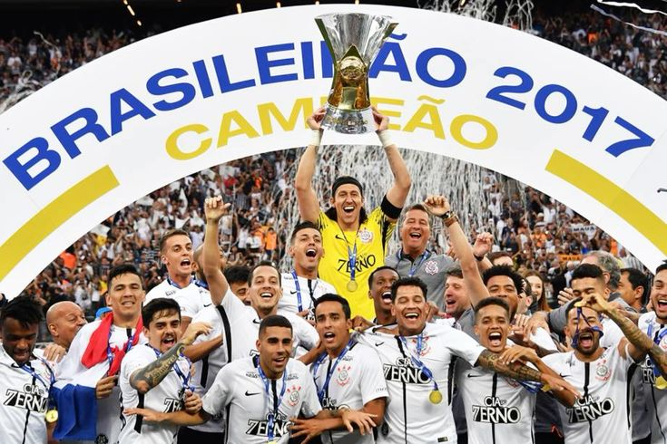
O Corinthians conquistou seu sétimo Campeonato Brasileiro e também o Campeonato Paulista.
TRICAMPEONATO PAULISTA
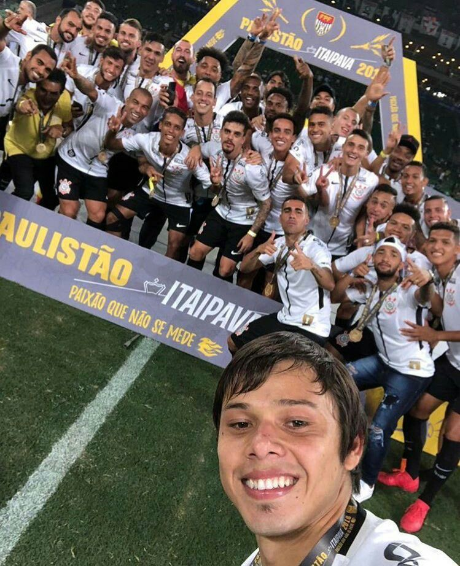
O Corinthians conquistou o Campeonato Paulista pelo terceiro ano consecutivo.
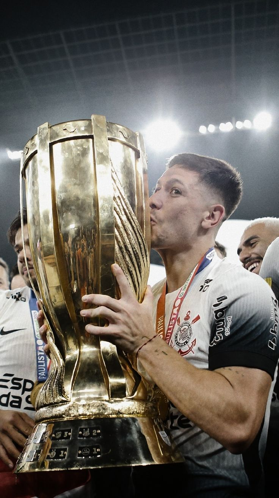
CAMPEÃO PAULISTA
O Corinthians conquistou o Campeonato Paulista de 2025, vencendo o Palmeiras por 1 a 0 no primeiro jogo da final e empatando em 0 a 0 na Neo Química Arena. Com a conquista, o Timão chegou ao seu 31º título paulista.
TETRACAMPEÃO DA COPA DO BRASIL
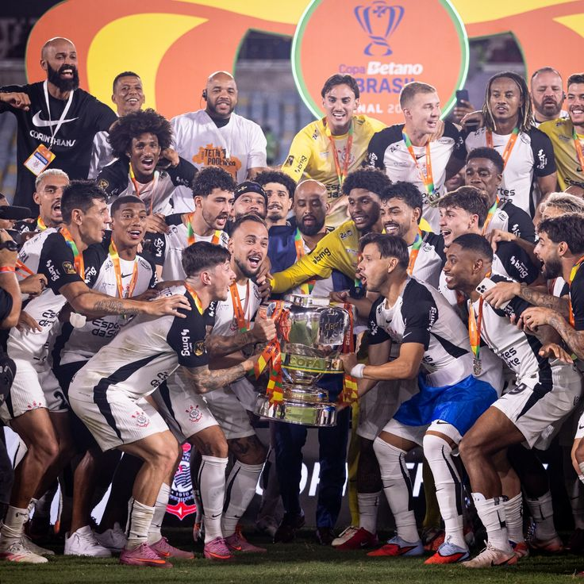
Em 2025, o Corinthians conquistou sua quarta Copa do Brasil ao vencer o Vasco por 2 a 1 na final, no Maracanã.
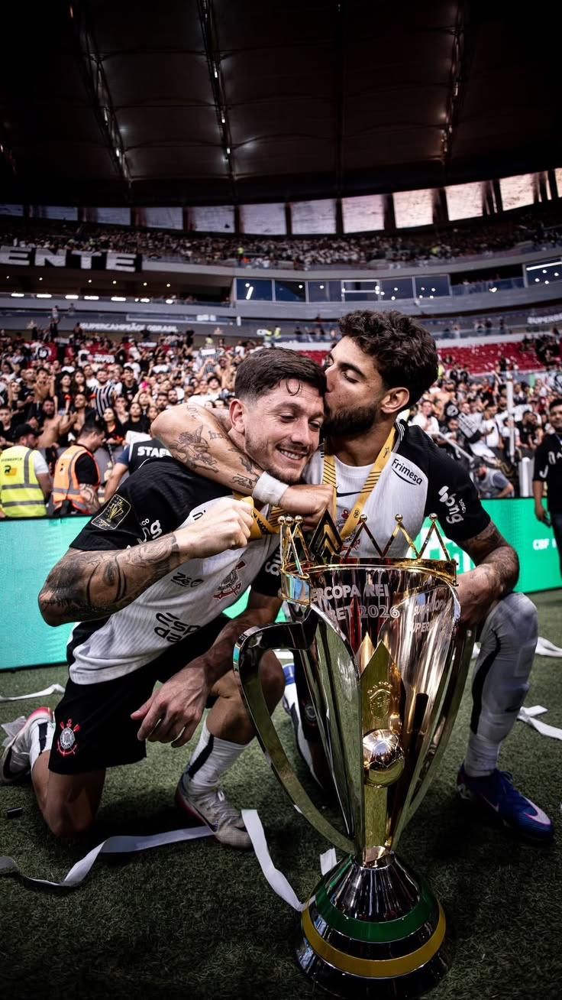
SUPERCOPA REI
Em 1º de fevereiro de 2026, o Corinthians venceu o Flamengo por 2 a 0 na Arena BRB Mané Garrincha e conquistou a Supercopa Rei. Gabriel Paulista e Yuri Alberto marcaram os gols da conquista, que deu ao Corinthians seu segundo título na competição.